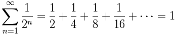
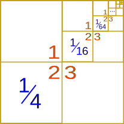
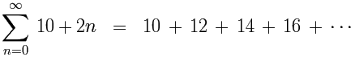
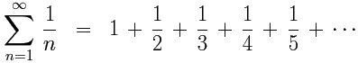
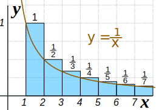
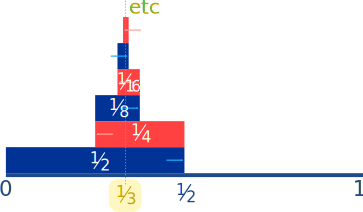
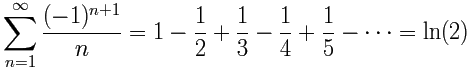
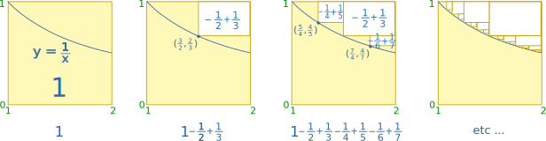

Infinite Series
The sum of infinite terms that follow a rule.
When we have an infinite sequence of values:
12 , 14 , 18 , 116 , ...
which follow a rule (in this case each term is half the previous one),
and we add them all up:
12 + 14 + 18 + 116 + ... = S
we get an infinite series.
"Series" sounds like it is the list of numbers, but it is actually when we add them together.
(Note: The dots "..." mean "continuing on indefinitely")
First Example
You might think it is impossible to work out the answer, but sometimes it can be done!
Using the example from above:
12 + 14 + 18 + 116 + ... = 1
And here is why:

(We also show a proof using Algebra below)
Notation
We often use Sigma Notation for infinite series. Our example from above looks like:

| This symbol (called Sigma) means "sum up" |
Try putting 1/2^n into the Sigma Calculator.
Another Example
14 + 116 + 164 + 1256 + ... = 13
Each term is a quarter of the previous one, and the sum equals 1/3:

Of the 3 spaces (1, 2 and 3) only number 2 gets filled up, hence 1/3.
(By the way, this one was worked out by Archimedes over 2200 years ago.)
Converge
Let's add the terms one at a time. When the "sum so far" approaches a finite value, the series is said to be "convergent":
Our first example:
12 + 14 + 18 + 116 + ...
Adds up like this:
| Term | Sum so far | |
| 1/2 | 0.5 | |
| 1/4 | 0.75 | |
| 1/8 | 0.875 | |
| 1/16 | 0.9375 | |
| 1/32 | 0.96875 | |
| ... | ... |
The sums are heading towards a value (1 in this case), so this series is convergent.
The "sum so far" is called a partial sum .
So, more formally, we say it is a convergent series when:
"the sequence of partial sums has a finite limit."
Diverge
If the sums do not converge, the series is said to diverge.
It can go to +infinity, −infinity or just go up and down without settling on any value.
Example:
1 + 2 + 3 + 4 + ...
Adds up like this:
| Term | Sum so far | |
| 1 | 1 | |
| 2 | 3 | |
| 3 | 6 | |
| 4 | 10 | |
| 5 | 15 | |
| ... | ... |
The sums are just getting larger and larger, not heading to any finite value.
It does not converge, so it is divergent, and heads to infinity.
Example: 1 − 1 + 1 − 1 + 1 ...
It goes up and down without settling towards some value, so it is divergent.
More Examples
Arithmetic Series
When the difference between each term and the next is a constant, it is called an arithmetic series.

(The difference between each term is 2.)
Geometric Series
When the ratio between each term and the next is a constant, it is called a geometric series.
Our first example from above is a geometric series:
(The ratio between each term is ½)
And, as promised, we can show you why that series equals 1 using Algebra:
Now subtract S/2 from S
All the terms from 1/4 onwards cancel out.
Harmonic Series
This is the Harmonic Series:

It is divergent.
How do we know? Let's compare it to another series:
| 1 | + | 12 | + | 13+14 | + | 15+16+17+18 | + | 19+... |
| 1 | + | 12 | + | 14+14 | + | 18+18+18+18 | + | 116+... |
In each case, the top values are equal or greater than the bottom ones.
Now, let's add up the bottom groups:
| 1 | + | 12 | + | 14+14 | + | 18+18+18+18 | + | 116+... | ||
| 1 | + | 12 | + | 12 | + | 12 | + | 12 | + | ... = ∞ |
That series is divergent.
So the harmonic series must also be divergent.
Here is another way:
We can sketch the area of each term and compare it to the area under the 1/x curve:

1/x vs harmonic series area
Calculus tells us the area under 1/x (from 1 onwards) approaches infinity, and the harmonic series is greater than that, so it must be divergent.
Alternating Series
An Alternating Series has terms that alternate between positive and negative.
It may or may not converge.
Example: 12 − 14 + 18 − 116 + ... = 13
This illustration may convince you that the terms converge on 13:

Maybe you can try to prove it yourself? Try pairing up each plus and minus pair, then look up above for a series that matches.
Another example of an Alternating Series (based on the Harmonic Series above):

This one converges on the natural logarithm of 2
Advanced Explanation:
To show WHY, first we start with a square of area 1, and then pair up the minus and plus fractions to show how they cut the area down to the area under the curve y=1/x between 1 and 2:

Can you see what remains is the area of 1/x from 1 to 2?
Using integral calculus (trust me) that area is ln(2):
You can investigate this further!
- do those rectangles really make the area above the curve as shown?
- is the area below the curve really ln(2) = 0.693... ? Try the Integral Approximation Calculator to see (y=1/x between 1 and 2)
Order!
The order of the terms can be very important! We can sometimes get weird results when we change their order.
For example in an alternating series, what if we made all positive terms come first? So be careful!
More
There are other types of Infinite Series, and it is interesting (and often challenging!) to work out if they are convergent or not, and what they may converge to.